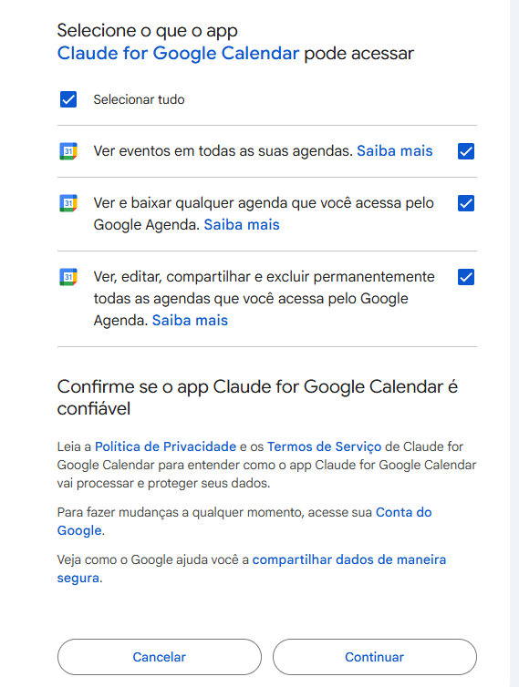

- 1. O que são Artefatos
- 2. Normal vs. Ao Vivo
- 3. O que é uma API
- 4. Conectores
- 5. GitHub — Baixar e instalar Skills
- 6. Exemplo — Google Agenda
- 7. Dashboard — Fonte de Dados via API
- 8. Dashboard com arquivos locais
- 9. Compartilhamento
- 10. Claude no Chrome vs Artefatos
- 11. Limitações do Claude no Chrome
- 12. Materiais da aula
O que são Artefatos?
Um artefato é uma saída visual e interativa gerada pelo Claude. Em vez de responder apenas com texto, o Claude pode criar páginas HTML, painéis, tabelas, gráficos e formulários completos — que ficam renderizados diretamente na conversa, prontos para interagir.
Pense em um artefato como uma mini-página web que o Claude constrói na hora. Ela pode ter botões, filtros, gráficos animados, tabelas dinâmicas e qualquer elemento visual — tudo criado por linguagem natural, sem precisar escrever código.
HTML
Dashboards, relatórios visuais, formulários interativos, páginas completas.
React
Componentes dinâmicos com estado, filtros em tempo real e animações.
Markdown / SVG
Documentos formatados, diagramas, fluxogramas e ilustrações vetoriais.
Artefato Normal vs. Artefato ao Vivo
A diferença fundamental é onde os dados vêm e por quanto tempo o artefato continua útil. Um artefato normal captura um momento. Um artefato ao vivo é um painel que continua trabalhando para você mesmo depois que a conversa acabou.
| Característica | Artefato Normal | Artefato ao Vivo |
|---|---|---|
| Dados | Fixos no momento da criação | Buscados em tempo real a cada abertura |
| Persistência | Existe só dentro da conversa | Salvo e reabrível fora da conversa |
| Conectores | Não usa | Chama MCPs e APIs |
| Atualização | Só se pedir ao Claude novamente | Automática, agendada ou via botão |
| Compartilhamento | Exporta como arquivo estático | Cada pessoa usa na própria conta |
| Caso de uso ideal | Relatório pontual, apresentação única | Dashboard recorrente, monitoramento |
Um artefato normal é como imprimir um relatório — útil no momento, mas estático. Um artefato ao vivo é como ter um painel de TV ligado na parede que se atualiza automaticamente todo dia de manhã.
O que é uma API?
API significa Application Programming Interface. É uma ponte padronizada que permite que dois sistemas se comuniquem — um faz uma pergunta, o outro responde com dados organizados.
Quando você abre um app de previsão do tempo, ele não armazena os dados meteorológicos dentro de si. Ele envia uma pergunta para o servidor do serviço de clima e recebe uma resposta com as informações. Essa "conversa" entre sistemas acontece via API. Os conectores do Cowork e os artefatos ao vivo funcionam exatamente da mesma forma.
API com autenticação
Exige login ou chave de acesso. É o caso dos conectores do Microsoft 365, Google, Slack — cada usuário precisa autorizar o acesso aos próprios dados.
API pública
Aberta, sem necessidade de conta ou chave. Qualquer sistema pode fazer perguntas. É o caso da API do IBGE, dados de clima e outras fontes governamentais ou abertas.
Um artefato ao vivo pode chamar qualquer API — autenticada via conector ou pública via chamada direta. O resultado é o mesmo: dados reais chegando ao seu painel em tempo real, sem precisar exportar ou copiar nada manualmente.
O que são Conectores — e os principais do mercado
Conectores são integrações que dão ao Claude permissão para acessar serviços externos em nome do usuário. Tecnicamente, são servidores MCP (Model Context Protocol) — um padrão aberto que permite ao Claude conversar com APIs de terceiros de forma segura. Você autoriza uma vez, e o artefato pode buscar os dados quantas vezes quiser.
Microsoft
Gestão de Projetos
Comunicação
Dados & Analytics
CRM & Financeiro
Em muitas empresas, conectores como o Microsoft 365 exigem liberação prévia pelo time de TI. Se esse for o seu caso, as alternativas são usar APIs públicas (sem autenticação) ou trabalhar com arquivos locais — ambas cobertas nos próximos exemplos desta aula.
GitHub — Baixar e instalar as Skills de Design
Skills são pacotes de instruções que ensinam o Claude a executar tarefas especializadas com mais qualidade. Antes de criar os primeiros artefatos, vamos instalar duas skills de design que vão tornar os dashboards gerados visivelmente mais sofisticados — sem precisar mudar nenhum prompt.
frontend-design
Skill oficial da Anthropic para criação de interfaces de alta qualidade. Evita a estética genérica de IA e gera código visualmente polido e criativo.
ui-ux-pro-max
25 tipos de gráficos, 161 paletas de cores, regras de dashboard e dark mode. A skill de design mais popular da comunidade.
O Claude carrega as skills ativas no início de cada tarefa. Se você instalar depois de criar um artefato, ele não vai retroativamente aplicar as regras de design ao que já foi gerado. Instalar agora garante que todos os exemplos da aula se beneficiem das duas skills.
Skill 1 — frontend-design (Anthropic)
Acesse o repositório oficial da Anthropic no GitHub
Abra o link abaixo no navegador. Você vai ver o repositório de skills da Anthropic com 117 mil estrelas.
Baixe o repositório completo
Clique no botão verde Code e depois em Download ZIP. Salve o arquivo e extraia o conteúdo em uma pasta de fácil acesso.
Após extrair, navegue até skills-main → skills → frontend-design. Essa é a pasta que vamos instalar no Cowork.
Instale a skill no Cowork
No aplicativo do Claude, clique em Customizar → Habilidades → Adicionar habilidade → Fazer upload de habilidade e selecione a pasta frontend-design.
O Cowork espera a pasta inteira — não um arquivo individual. Selecione a pasta frontend-design com todos os arquivos dentro dela.
Skill 2 — ui-ux-pro-max (Comunidade)
Acesse o repositório da skill no GitHub
Abra o link abaixo. Este é o repositório com mais de 75 mil estrelas focado em design de interfaces e visualização de dados.
Baixe o repositório e localize a pasta da skill
Clique em Code → Download ZIP, extraia o arquivo e navegue até ui-ux-pro-max-skill-main → .claude → skills → ui-ux-pro-max.
No Windows, pastas que começam com ponto podem estar ocultas. Se não aparecer, ative a opção Itens ocultos no Explorador de Arquivos antes de navegar.
Instale no Cowork
Repita o processo: Customizar → Habilidades → Adicionar habilidade → Fazer upload de habilidade e selecione a pasta ui-ux-pro-max.
Após instalar as duas, acesse Customizar → Habilidades e confirme que frontend-design e ui-ux-pro-max aparecem na lista. A partir daqui, todos os artefatos criados nesta aula vão se beneficiar automaticamente das duas.
Artefato ao Vivo com Google Agenda
Conecte o Google Calendar no Cowork
No painel lateral do Cowork, acesse Conectores → Adicionar → Google Calendar e autorize o acesso com sua conta Google.
O Google vai pedir autorização para que o Claude leia sua agenda. Esse acesso é somente leitura — o Claude não cria nem apaga eventos sem que você peça explicitamente.

Na tela de autorização do Google, marque todas as permissões solicitadas. Liberar acesso parcial pode impedir o conector de ler os eventos corretamente.
Use o prompt abaixo para criar o artefato
Copie e envie no chat do Cowork com o conector ativo.
Salve o artefato para reusar depois
Após o Claude gerar o painel, clique em Salvar artefato. Ele ficará disponível na lista de artefatos da sua conta e pode ser reaberto a qualquer momento com os dados atualizados.
Dashboard — Fonte de Dados via API
Um artefato ao vivo pode buscar dados de qualquer API pública diretamente, sem precisar de conector ou autenticação. O JavaScript do artefato faz a chamada, recebe os dados em tempo real e atualiza o painel automaticamente — funciona para qualquer pessoa, sem liberação de TI.
A diferença em relação ao conector do Google Agenda é simples: lá o Claude se autenticou em nome do usuário via conector. Aqui, o artefato acessa APIs abertas diretamente — como portais de dados do governo, cotações financeiras, dados climáticos ou qualquer serviço sem barreira de acesso.
API do IBGE
IPCA, PIB, população, índices regionais. Dados oficiais do Brasil, atualizados automaticamente.
ExchangeRate API
Cotações de moedas em tempo real. Dólar, euro e mais de 160 moedas sem necessidade de cadastro.
Open-Meteo
Dados climáticos e previsão do tempo por coordenadas. Gratuita, sem chave de API, atualizada de hora em hora.
APIs públicas são aquelas que qualquer sistema pode consultar sem criar conta ou fornecer credenciais. Elas retornam dados em formato JSON — um padrão estruturado que o artefato lê e transforma em gráficos e tabelas na hora.
Prompt — Dashboard econômico com API do IBGE
Artefato ao vivo com dados reais do IPCA buscados diretamente da API pública do IBGE, sem nenhuma configuração prévia.
É uma API brasileira, oficial, gratuita e sem cadastro. Os dados são reconhecíveis pelo público (inflação, IPCA) e o resultado é imediatamente útil — um painel que qualquer analista gostaria de ter na área de trabalho.
Dashboard com Arquivos Locais do Computador
Esta é a solução para quem não pode usar conectores corporativos. O Cowork consegue acessar uma pasta do seu computador com permissão do próprio usuário — sem nenhum conector externo, sem liberação de TI. O artefato lê os arquivos da pasta, processa os dados e monta o painel automaticamente.
O artefato que vamos criar neste exercício vai: ler planilhas Excel da sua pasta, montar um dashboard com KPIs e filtros, ter um botão de atualização manual e ser programado para rodar automaticamente uma vez por dia.
Selecione a pasta com seus arquivos
No Cowork, clique em Selecionar pasta e escolha o diretório onde estão as planilhas Excel. O Claude passará a ter acesso de leitura a essa pasta.
O artefato suporta .xlsx, .xls e .csv. Se a pasta tiver múltiplos arquivos, o artefato pode ler todos e consolidar os dados em um único painel.
Descreva os dados e peça o dashboard
Use o prompt abaixo adaptando os campos para a sua realidade — nome das colunas, KPIs que importam e filtros que você usa no dia a dia.
Substitua os campos entre colchetes pelas informações reais da sua planilha — nome das colunas, tipo de dado e os KPIs que fazem sentido para o seu contexto. Quanto mais específico, melhor o resultado.
Como funciona o botão de atualização manual
O botão no dashboard dispara window.cowork.runScheduledTask() — que relê os arquivos da pasta e atualiza os dados na tela sem precisar voltar ao chat.
Você adiciona um arquivo novo na pasta → abre o artefato → clica em "Atualizar dados" → o painel já reflete as informações do novo arquivo. Nenhuma interação com o Claude necessária.
Atualização automática diária
O Cowork permite agendar uma tarefa que relê a pasta e atualiza o artefato automaticamente. Configure para o horário em que você começa o dia de trabalho.
Como funciona o Compartilhamento
O comportamento de compartilhamento é diferente entre artefatos normais e ao vivo. Entender essa diferença evita frustrações e ajuda a escolher a melhor abordagem para cada situação.
O fluxo mais eficiente é: o Claude gera o artefato uma vez → você salva o prompt → distribui o prompt para o time → cada pessoa cria o próprio na conta do Cowork com seus próprios acessos. O resultado é um painel personalizado para cada usuário, com os dados corretos para cada permissão.
Claude no Chrome vs. Artefatos ao Vivo
São ferramentas completamente diferentes — cada uma resolve um tipo de problema. A confusão é comum porque as duas envolvem o Claude "fazendo coisas além de responder", mas o mecanismo e o propósito são opostos.
| Característica | Artefato ao Vivo | Claude no Chrome |
|---|---|---|
| O que faz | Cria um painel de dados persistente | Opera o navegador como um usuário humano |
| Onde vive | Dentro do Cowork, reabrível | No navegador, em tempo real |
| Iniciativa | Você abre quando quer | O Claude age enquanto você observa |
| Para que serve | Visualizar e monitorar dados | Executar tarefas em sistemas web |
| Exemplo | Dashboard de KPIs que atualiza todo dia | Preencher formulário em sistema interno |
| Precisa de conector? | Sim (ou API pública) | Não — usa o navegador diretamente |
| Resultado | Um painel salvo e reutilizável | Uma ação realizada no sistema externo |
Artefato é para ver. Claude no Chrome é para fazer. Um monitora dados, o outro executa tarefas. Os dois podem ser usados juntos: o artefato mostra que algo precisa ser feito, e o Claude no Chrome vai lá e faz.
Como configurar o Claude no Chrome
Instale o suplemento Claude for Chrome
Acesse o link abaixo e adicione a extensão ao seu navegador Chrome. É gratuita para instalar — o uso requer plano pago.
O Claude no Chrome exige uma assinatura ativa do Claude Pro ou superior. A extensão pode ser instalada gratuitamente, mas as ações de controle do navegador só funcionam com conta paga.
Permita que o Claude controle o seu computador
Após instalar a extensão, siga as configurações de permissão solicitadas para que o Claude consiga interagir com as páginas abertas no navegador.
A extensão vai solicitar permissão para ler e interagir com as páginas abertas. Aceite todas as permissões solicitadas — sem elas, o Claude não consegue ver o conteúdo das páginas nem clicar em elementos.
Use pelo celular — mesmo estando longe do computador
Com o Claude no Chrome configurado, você pode dar comandos pelo app do Claude no celular e ele vai executar no navegador do seu computador — desde que os dois estejam na mesma conta.
Você abre o Claude pelo celular, manda uma mensagem pedindo para preencher um formulário ou executar uma tarefa — e o Claude age no Chrome do seu computador em tempo real. Útil para tarefas repetitivas que você quer disparar sem precisar estar na frente do computador.
Exercício prático — Preenchendo um formulário
Prompt — Preenchimento de formulário no Google Forms
Com a extensão instalada e o formulário aberto no Chrome, envie o prompt abaixo. O Claude vai identificar os campos, preencher os dados e aguardar sua confirmação antes de enviar.
O Claude vai navegar até o link, ler os campos disponíveis, preencher cada um e pausar para confirmação. Se algum campo tiver nome diferente do esperado, ele vai interpretar o contexto e encontrar o campo correto automaticamente.
Limitações do Claude no Chrome
O Claude no Chrome é uma ferramenta poderosa, mas tem fronteiras claras. Conhecê-las antes de usar evita expectativas incorretas e ajuda a escolher a ferramenta certa para cada situação.
Autenticação especial
Não funciona em páginas que exigem certificado digital, token físico ou autenticação em dois fatores via aplicativo externo — como acontece em alguns sistemas governamentais e bancários.
CAPTCHAs e verificações anti-bot
Sistemas com proteções contra automação podem bloquear as ações do Claude ou exigir uma intervenção manual do usuário para completar a verificação.
Páginas muito dinâmicas
Interfaces com muitos elementos sobrepostos, pop-ups em camadas ou conteúdo carregado de forma não convencional podem confundir a leitura visual do Claude.
Velocidade
É mais lento que automações tradicionais (RPA como UiPath ou Power Automate) porque o Claude processa visualmente página a página. Não é indicado para grandes volumes em loop.
Sem memória entre sessões
Se o site expirar o login entre conversas, o Claude precisará que o usuário autentique novamente. Ele não armazena credenciais entre sessões.
Iframes de terceiros
Conteúdo carregado dentro de iframes de outros domínios pode ser inacessível — é uma limitação de segurança do próprio navegador, não do Claude.
Se a tarefa é repetitiva, de alto volume e o sistema tem API disponível, um conector ou automação via Power Automate será sempre mais eficiente. O Claude no Chrome brilha quando o sistema não tem API e a tarefa não é simples o suficiente para um RPA tradicional configurar — ou quando você precisa de flexibilidade para lidar com variações na página.
Arquivos da Aula 4
Acesse a pasta da aula para baixar os materiais, planilhas de exemplo e arquivos complementares utilizados nos exercícios práticos.